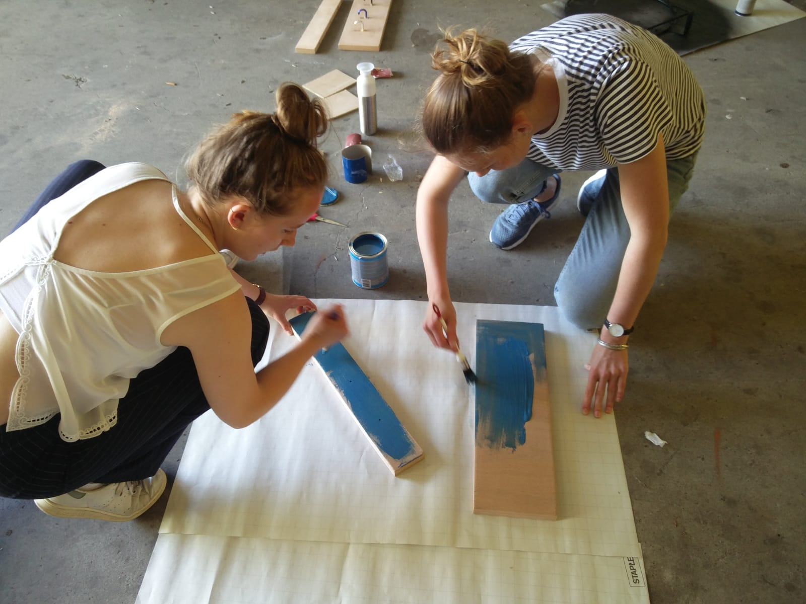
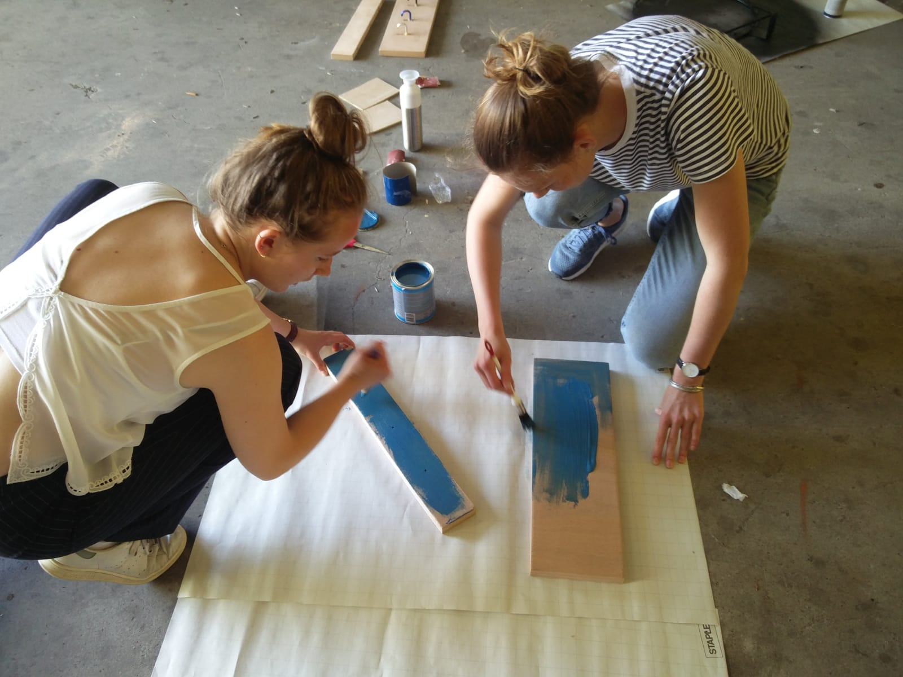
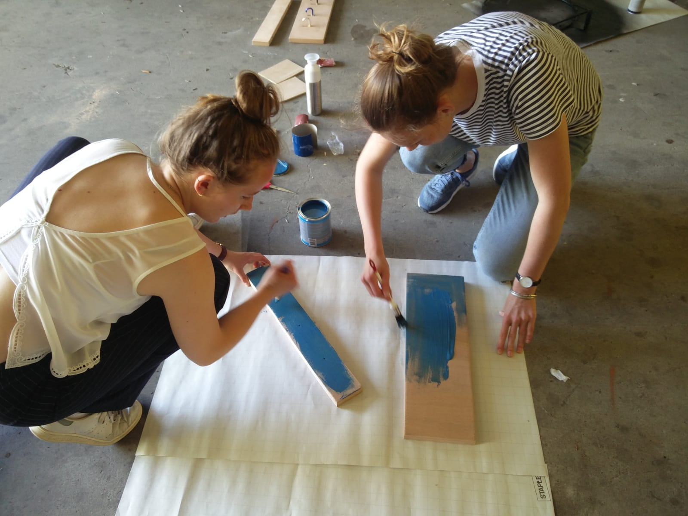

Dag 6 | maandag 11 juni
bouwen
Vandaag gingen we weer verder met het maken van de kapstok. We hadden alle benodigdheden om ze zagen etc. We hebben de gaten voor de lichtjes gemaakt en de gaten voor de sloten. Gezamenlijk hebben we besloten hoe we de sloten precies gaan doen. Hani heeft dit uitgewerkt in code met Arduino.
Sanne en ik zijn vandaag op pad gegaan om verf te halen, zodat we het een mooie kleur kunnen geven. We zijn er namelijk ook gezamenlijk uit hoe het logo eruit komt te zien op de kapstok zelf en op de NFC-chip. We hebben ook scharnieren gehaald, zodat we makkelijk de binnenkant kunnen bereiken en zo alle elektronica erin kunnen stoppen en verbergen. Als we alles al vastmaken, gaat dat niet.
We hebben de gehele kapstok geverfd in het blauw en we gaan morgen het logo in het wit erop spuiten. Zo is het duidelijk dat het wearable bij de kapstok hoort Nu we het geverfd hebben zetten we het morgen in elkaar en kunnen we alle elektronica aansluiten en het Arduino board + Bread board aan elkaar maken.

 

Sanne en ik zijn vandaag op pad gegaan om verf te halen, zodat we het een mooie kleur kunnen geven. We zijn er namelijk ook gezamenlijk uit hoe het logo eruit komt te zien op de kapstok zelf en op de NFC-chip. We hebben ook scharnieren gehaald, zodat we makkelijk de binnenkant kunnen bereiken en zo alle elektronica erin kunnen stoppen en verbergen. Als we alles al vastmaken, gaat dat niet.
We hebben de gehele kapstok geverfd in het blauw en we gaan morgen het logo in het wit erop spuiten. Zo is het duidelijk dat het wearable bij de kapstok hoort Nu we het geverfd hebben zetten we het morgen in elkaar en kunnen we alle elektronica aansluiten en het Arduino board + Bread board aan elkaar maken.
